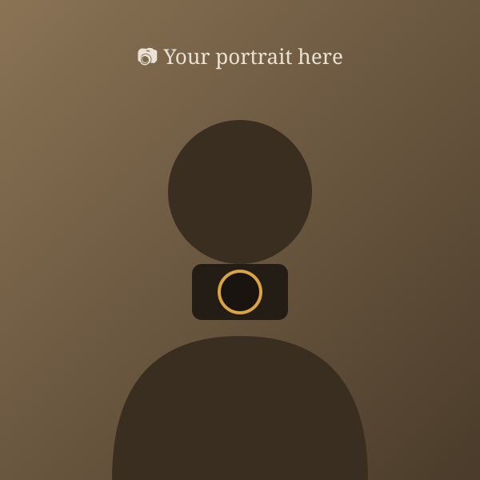

Latest field guides
Vol. 01 — Guides

How every guide is made
The methodStep 01 — Research
Weeks of homework
Every trip starts long before the flight: scouting locations, light direction, seasons, opening hours, and the food worth traveling for.
Step 02 — Shoot
Boots on the ground
I walk the plan, shoot the shot list, and note what actually worked — and what the blogs got wrong.
Step 03 — Share
The guide you're reading
The research, the route, and the exact spots — published so your trip starts where mine ended.

self-portrait · somewhere far awayThe person behind the lens
I'm a photographer who plans trips the way other people plan weddings — spreadsheets, maps, shot lists, and food research included.
This site is everything I wish existed when I started: honest guides that tell you where the photo was taken, when to be there, and what to do with the rest of your day. (We'll replace this with your real story.)
My story